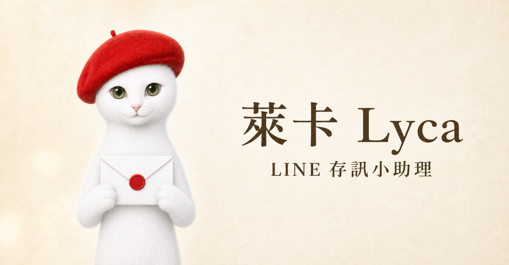
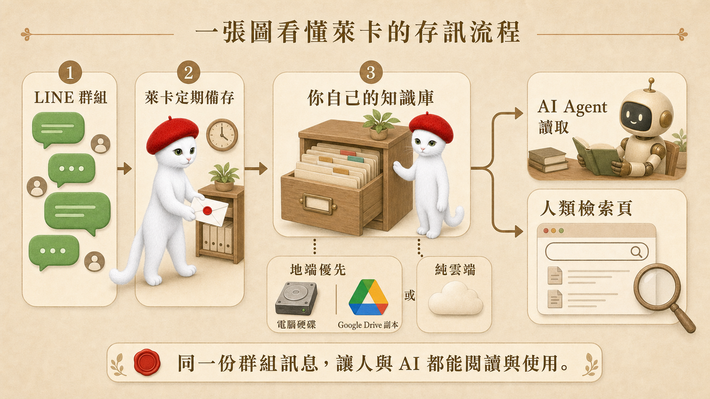
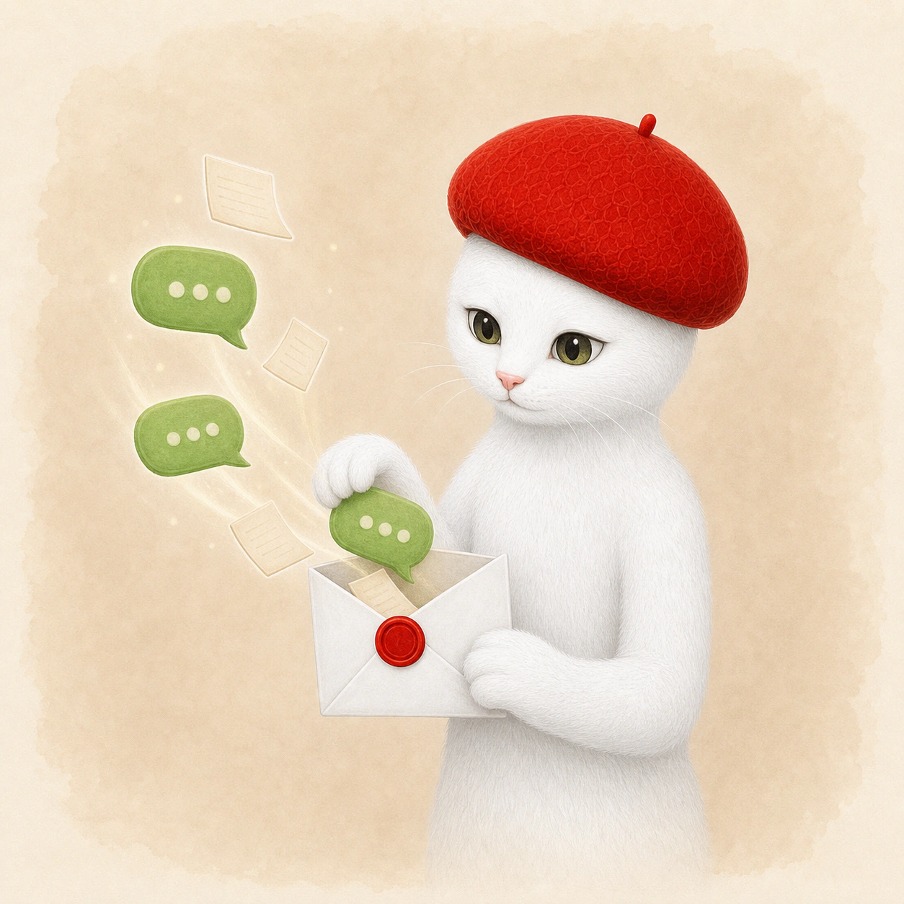
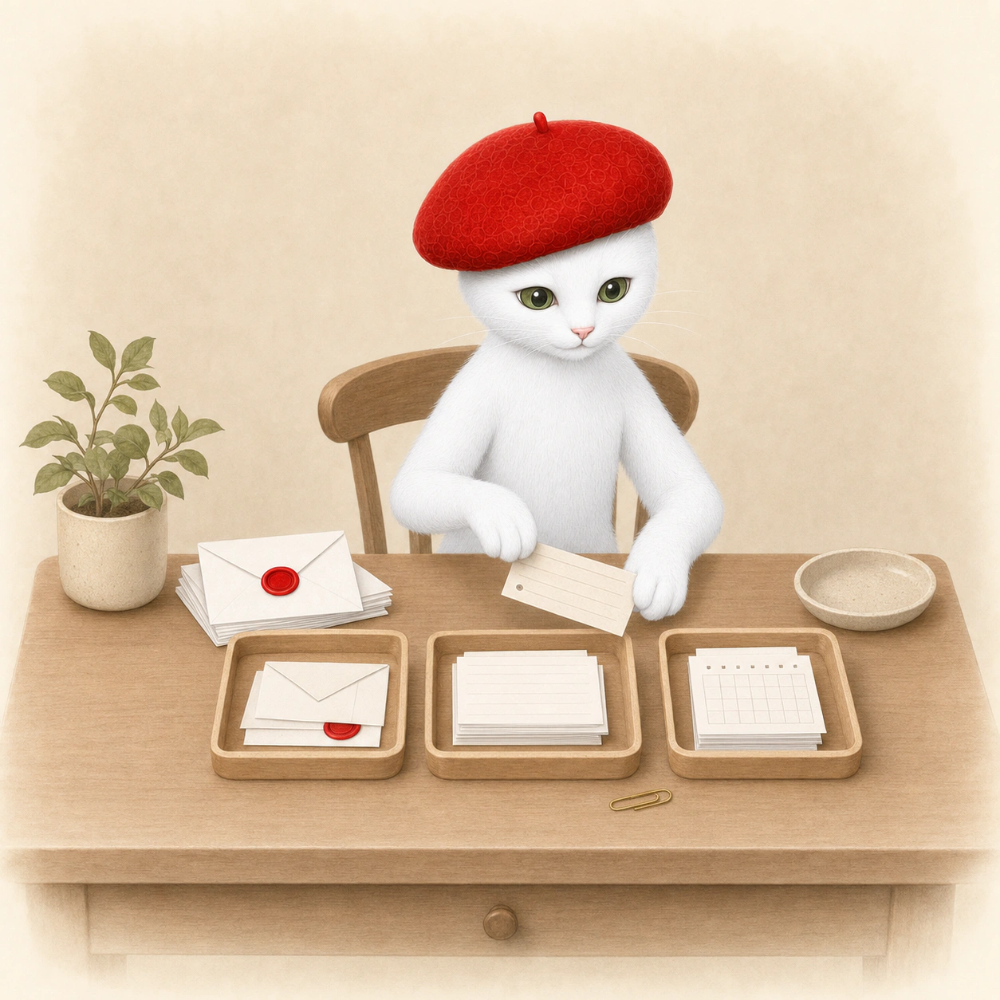
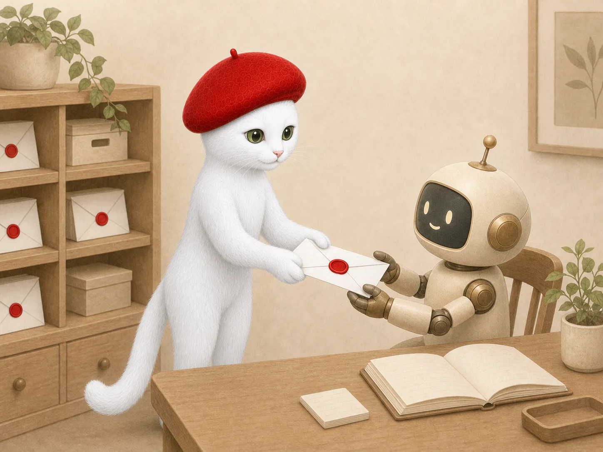

知識庫主檔存進自己的電腦硬碟，再依設定同步保留一份 Google Drive 雲端副本，降低資料只留在單一位置的風險。

LINE Group Memory Service
萊卡 LycaLINE 存訊小助理
重要訊息，不要再靠某一個人記得。
台灣的隱性知識、領域知識，大量出現在 LINE 群裡，講完就散了。萊卡把這些對話留下來，變成你自己的知識庫，然後讓 AI 應用。
萊卡定期備存已設定 LINE 群組裡的文字、連結與附件線索，整理進自己的知識庫。人可以從檢索頁快速查找，取得授權的 AI Agent 也能讀取同一份資料，延續後續整理與工作流程。
萊卡是這套服務的其中一個應用。完整的服務是幫個人與組織提煉知識、架構知識庫，然後讓 AI 應用。
第一波內部測試進行中
00 · At a Glance
一張總表看懂：LINE 群組訊息如何變成自己與 AI 都能使用的知識庫
萊卡是 LINE 群組與 AI 工作流之間的資料入口。訊息定期備存後，不再只留在聊天畫面，而是進入你自己掌握的知識庫，接著分別提供給 AI Agent 與人類使用。

點我看詳細說明 了解萊卡會保存哪些資訊、資料放在哪裡，以及人與 AI 如何使用同一份知識庫。
LINE 群組
群組持續產生文字、連結、圖片、PDF 與檔案。萊卡會連同訊息時間、群組來源、原始文字及附件線索一起保存，保留日後查證需要的脈絡。
萊卡定期備存
依設定週期執行備存，把群組裡散落的訊息轉成可以持續累積、整理與查找的資料，不必再由某一個人手動複製。
你自己的知識庫
資料不只停在聊天畫面，而是整理進由你掌握的知識庫。可以依導入方式放在指定雲端，或以自己的電腦硬碟作為主要保存位置。
AI Agent 讀取
取得授權的 AI Agent 可以讀取知識庫，依原始脈絡查找資料、整理決定、彙整待辦，並銜接後續工作流程。
人類檢索頁
成員可從檢索頁依關鍵字、群組、時間與附件線索找回內容，同時回到原始訊息理解完整討論脈絡。
保存位置可以依導入方式選擇
依團隊的使用情境與權限需求，把備存資料放在指定雲端空間，讓授權成員與後續服務取用。
同一份群組資訊，一份交給 AI Agent 讀，一個檢索頁給人找，讓人與 AI 都能真正使用 LINE 裡累積的內容。
目前的運作範圍：萊卡只在已設定的群組定期備存，每個群組分開保存；實際能保存的文字與附件資訊，仍依 LINE 官方提供的權限及導入設定為準。
01 · The Cost of Forgetting
你每天都在 LINE 討論，真正的決定卻沒有留下來
群組持續有新訊息，真正耗時間的是事後重找、重問，再把同一件事重新整理一次。

決定找不到
記得群組裡討論過，卻沒人確定最後採用哪一版、為什麼這樣決定。
行動沒有留下
訊息裡有人交辦、有人補充，過幾天才發現沒有形成可以追蹤的下一步。
檔案離開脈絡
找得到簡報或表單，卻找不到當時搭配的說明、版本差異與使用情境。
群組資訊最容易被低估的成本，是每次找不到之後產生的重找、重問與重做。
02 · How It Works
一則 LINE 訊息，會怎麼走
萊卡的主流程可以拆成五個階段：定期備存、分群保存、寫入自有知識庫，再分別交給 AI Agent 讀取與人類檢索。

萊卡來說明
我會定期備份訊息
原始內容會按群組保存，連同時間、來源與附件線索整理進知識庫。等你或 AI Agent 需要使用時，仍然看得到事情發生在哪個群組、什麼時間，以及當時搭配了哪些連結或檔案。
一則訊息的轉換圖
從群組原話，變成日後找得回來的紀錄
03 · What You Can Use
同一份群組資料，人與 AI 都能繼續使用
你照平常在 LINE 討論，萊卡定期把文字、連結與附件整理進自己的知識庫，再提供給 AI Agent 與人類檢索頁使用。
群組專屬備存
保存後續整理需要的原始訊息與來源。
- 文字與連結
- 圖片、PDF 與檔案線索
- 時間與群組來源
自己的知識庫
依導入設定保存於本機硬碟或指定雲端空間。
- 不同群組分開保存
- 地端優先或純雲端
- 可同步 Google Drive 副本
AI Agent 讀取
讓授權的 Agent 直接使用知識庫裡的群組資料。
- 查找過往討論
- 整理摘要與脈絡
- 銜接後續工作流程
人類檢索頁
沿著關鍵字、群組與附件線索回到原始脈絡。
- 群組專屬檢索頁
- 訊息與附件索引
- 歷史內容快速回看
重點不只是一份摘要，而是把原始訊息、附件線索與討論脈絡留在自己能掌握、也能交給 AI 使用的地方。

04 · Human and AI Ready
萊卡把群組訊息整理好，再交給 AI Agent 使用
群組訊息存進自己的知識庫後，就能成為 AI 工作流真正讀得到的資料。你不必把同一段對話重新複製貼上，也不必另外整理一套只給 AI 的版本。
- 給 AI Agent：在授權的資料夾範圍內讀取歷史討論、附件線索與群組脈絡，協助查找、整理與延續後續工作。
- 給團隊成員：透過專屬檢索頁輸入關鍵字，快速找到當時的原始訊息與相關附件。
- 給資料掌握者：保存位置與讀取權限依導入方式設定，讓資料留在自己選擇的本機或雲端環境。
05 · What Changes
群組資訊留下來，後面的工作才接得上
萊卡把原本只存在聊天畫面的內容，轉成團隊與 AI Agent 都能持續使用的知識資料。
- 1原本靠記憶翻聊天紀錄，之後可從群組檢索入口重新查找。
- 2原本每次都要重新交代背景，之後 AI Agent 可從知識庫讀取既有脈絡。
- 3原本附件離開討論脈絡，之後可連同來源與附件線索一起保存。
- 4原本資料只停在 LINE 平台裡，之後可保存到自己選擇的本機或雲端空間。
06 · Stay In LINE
群組照常討論，萊卡把資料收好
萊卡透過 LINE 官方帳號加入設定好的群組。團隊照原本方式聊天，訊息會依排程進入群組自己的知識庫、檢索頁與 Agent 讀取流程。
- 文字、連結、圖片、PDF 與檔案線索可以一起備存。
- 每個群組有自己的資料區與檢索頁，不和其他群組混在一起。
- 地端優先時，資料保存在自己的電腦硬碟，也可同步保留 Google Drive 副本。
- 需要使用時，人從檢索頁查找，AI Agent 從授權知識庫讀取。
照常聊天
討論仍留在熟悉的 LINE 群組。
定期備存
訊息與附件線索依群組寫入知識庫。
人機共用
人從檢索頁查找，AI Agent 從知識庫讀取。
07 · Common Questions
開始使用萊卡前，大家通常會問的六件事
先不用理解技術架構，從群組成員真正會遇到的使用情境開始。
需要另外下載 App 嗎？
不用。討論仍在原本的 LINE 群組，需要查找時再開啟群組專屬檢索頁。
現有群組能不能接？
可以從既有群組開始；先把萊卡的 LINE 官方帳號加入群組，再完成必要設定。
哪些內容可以留下？
包含文字、連結、圖片、PDF、其他檔案，以及後續查找需要的來源線索。
之後要怎麼找回來？
從群組專屬檢索頁輸入關鍵字，再回到相關文字、附件與討論脈絡。
資料會存在哪裡？
可依導入需求選擇純雲端或地端優先。地端優先時，主檔放在自己的電腦硬碟，也可同步保留 Google Drive 雲端副本。
AI Agent 可以讀嗎？
可以。完成資料夾與權限設定後，指定的 AI Agent 就能在授權範圍內讀取知識庫，協助查找、整理與延續工作流程。
08 · Suitable Scenarios
哪些群組最需要萊卡
群組裡經常出現專案決定、行動事項、附件與後續追蹤，萊卡就能減少事後翻找與重新整理的時間。
需要追蹤討論決定、工作進度與後續行動。
需要保留提醒、提問與課程進行中的補充資訊。
多人持續交流，需要把散落內容整理成可回顧的脈絡。
希望降低手動翻找訊息的負擔，也保留必要判斷空間。
09 · Test Status
目前正在進行第一波內部測試
第一波會先確認真實群組裡的定期備存、知識庫寫入、AI Agent 讀取與人類檢索流程。完成後，將開放第二波測試報名。
第二波測試報名尚未開放
如果你有興趣，第二波會從一個明確的群組場景開始
挑一個群組
選出最常需要重找訊息、附件或討論決定的群組。
說明使用情境
告訴我群組平常怎麼使用，以及最希望萊卡先解決的問題。
參加第二波測試
確認範圍後，從指定群組開始觀察備存、知識庫讀取與檢索效果。